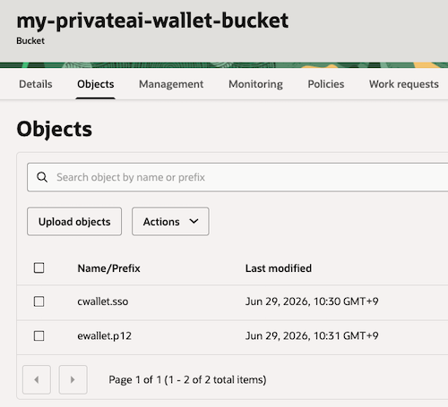

Private AI Services Container 시작하기 - Vector Indexing Service
Getting Started with the Vector Index Service – Part 1, Getting Started with the Vector Index Service – Part 2를 기반으로 테스트한 내용입니다.
설치할 VM 준비
Install the Private AI Services Container 내용중 Vector Indexing Service을 참조하여 설치합니다.
- OCI에서 VM을 생성합니다. 블로그와 달리 현재 기본 선택인 Oracle Linux 9를 사용하였습니다.
- Name: privateai-gpuvm
- Shape: VM.GPU.A10.1
- OS: Oracle Linux 9
- Boot volume: 스크립트 설치시 22 GB 필요 경고가 나오니, 기본 100GB로 설치
Boot Volume Resize
-
다음 명령을 실행합니다.
sudo /usr/libexec/oci-growfs -y df -h
설치 요구사항 확인
문서상의 요구사항에 따라 NVIDIA GPU, NVIDIA driver version 580.65.06+, NVIDIA Container Toolkit 등이 필요합니다. 다음 명령을 통해 요구사항에 충족하는 지 확인합니다.
-
nvidia-smi명령으로 설치된 GPU 및 Driver 버전을 확인합니다.[opc@privateai-gpuvm ~]$ nvidia-smi Thu Jun 18 02:48:19 2026 +-----------------------------------------------------------------------------------------+ | NVIDIA-SMI 595.71.05 Driver Version: 595.71.05 CUDA Version: 13.2 | +-----------------------------------------+------------------------+----------------------+ | GPU Name Persistence-M | Bus-Id Disp.A | Volatile Uncorr. ECC | | Fan Temp Perf Pwr:Usage/Cap | Memory-Usage | GPU-Util Compute M. | | | | MIG M. | |=========================================+========================+======================| | 0 NVIDIA A10 Off | 00000000:00:04.0 Off | 0 | | 0% 24C P8 10W / 150W | 0MiB / 23028MiB | 0% Default | | | | N/A | +-----------------------------------------+------------------------+----------------------+ +-----------------------------------------------------------------------------------------+ | Processes: | | GPU GI CI PID Type Process name GPU Memory | | ID ID Usage | |=========================================================================================| | No running processes found | +-----------------------------------------------------------------------------------------+ -
NVIDIA installation guide에 따라 NVIDIA Container Toolkit을 설치합니다.
-
repository를 구성합니다.
curl -s -L https://nvidia.github.io/libnvidia-container/stable/rpm/nvidia-container-toolkit.repo | \ sudo tee /etc/yum.repos.d/nvidia-container-toolkit.repo -
NVIDIA Container Toolkit 패키지를 설치합니다.
export NVIDIA_CONTAINER_TOOLKIT_VERSION=1.19.1-1 sudo dnf install -y \ nvidia-container-toolkit-${NVIDIA_CONTAINER_TOOLKIT_VERSION} \ nvidia-container-toolkit-base-${NVIDIA_CONTAINER_TOOLKIT_VERSION} \ libnvidia-container-tools-${NVIDIA_CONTAINER_TOOLKIT_VERSION} \ libnvidia-container1-${NVIDIA_CONTAINER_TOOLKIT_VERSION} -
컨테이너 런타임에서 GPU에 접근할 수 있는지, Container Device Interface 명령으로 확인합니다.
$ nvidia-ctk --debug cdi list INFO[0000] Found 3 CDI devices nvidia.com/gpu=0 nvidia.com/gpu=GPU-254e0845-21f5-822e-9001-bd62fd279bbf nvidia.com/gpu=all
-
Podman 설치
-
Oracle Linux 9 기준 다음 명령으로 설치합니다.
sudo dnf install -y container-tools -
설치된 버전을 확인합니다.
podman versionpodman images-
실행 예시
$ podman version Client: Podman Engine Version: 5.6.0 API Version: 5.6.0 Go Version: go1.25.9 (Red Hat 1.25.9-1.0.1.el9_7) Built: Fri May 29 13:42:49 2026 OS/Arch: linux/amd64 $ podman images REPOSITORY TAG IMAGE ID CREATED SIZE $
-
-
로그아웃 이웃에도 컨테이너가 계속 실행되도록 Lingering 설정
$ sudo loginctl enable-linger $(whoami) $ loginctl show-user $(whoami) | grep Linger Linger=yes -
컨테이너를 실행후 로그아웃합니다.
podman run -d ghcr.io/oracle/oraclelinux9-nginx:1.20 exit -
VM에 SSH로 재접속하여, 컨테이너가 실행중인지 확인합니다.
podman ps
Oracle Container Registry (OCR)에서 이미지 다운로드 받기
-
Oracle Private AI Services Container 이미지는 OCR(Oracle Container Registry)에서 제공합니다. Oracle Account로 로그인합니다.
-
Access Token이 필요합니다. 없는 경우 오른쪽 상단 유저 정보에서 생성합니다.
-
컨테이너 목록에서 Database > private-ai를 선택합니다.
-
이미지 다운로드를 위해서 라이센스 동의가 필요합니다. 오른쪽 가운데 Oracle AI Database License 경고문구에서 Continue를 클릭하여 동의합니다.

-
로그인후 이미지를 가져오는 것이 되는 지 확인합니다.
podman login container-registry.oracle.com docker pull container-registry.oracle.com/database/private-ai:gpu-index-26.1.0.0.0 -
이미지를 확인합니다.
$ podman images REPOSITORY TAG IMAGE ID CREATED SIZE container-registry.oracle.com/database/private-ai gpu-index-26.1.0.0.0 2a7965e5c8f1 7 weeks ago 2.32 GB
Private AI Services Container 설치 스크립트 가져오기
-
IMAGEID를 가져옵니다.
IMAGEID=`podman create container-registry.oracle.com/database/private-ai:gpu-index-26.1.0.0.0` -
컨테이너 이미지 내부에 있는 스크립트 파일을 복사하여 꺼냅니다.
podman cp $IMAGEID:/privateai/scripts/privateai-setup-gpu-index-26.1.0.0.0.zip . -
파일을 확인합니다.
$ ls -l total 12 -rw-rw-r--. 1 opc opc 12282 Apr 26 05:21 privateai-setup-gpu-index-26.1.0.0.0.zip ... -
압축해제합니다.
unzip privateai-setup-gpu-index-26.1.0.0.0.zip
Private AI Services Container - Vector Indexing Service 설치하기
-
필요한 폴더를 생성합니다.
cd setup export PRIVATE_DIR=/home/opc/privateai-gpu-index-https export SECRETS_DIR=/home/opc/secrets mkdir -p "$PRIVATE_DIR" "$SECRETS_DIR" -
Secret 관련 파일들을 생성합니다.
./secretsSetup.sh -s "$SECRETS_DIR"-
실행 예시 - keystore password 없으면, 이후 컨테이너 실행이 오류가 발생하니, 반드시 입력합니다.
$ ./secretsSetup.sh -s "$SECRETS_DIR" Enter keystore password: Confirm keystore password: SUCC: Generated security directory at /home/opc/secrets $ ls -la $SECRETS_DIR total 24 drwxr-xr-x. 3 opc opc 98 Jun 18 06:42 . drwx------. 10 opc opc 4096 Jun 18 06:41 .. -rw-r--r--. 1 opc opc 64 Jun 18 06:42 api-key -rw-r--r--. 1 opc opc 1371 Jun 18 06:42 cert.pem -rw-------. 1 opc opc 1704 Jun 18 06:42 key.pem -rw-r--r--. 1 opc opc 451 Jun 18 06:42 key.pub -rw-------. 1 opc opc 2782 Jun 18 06:42 keystore drwxr-xr-x. 2 opc opc 6 Jun 18 06:42 secrets
-
-
컨테이너 설정 파일을 생성합니다.
./configSetup.sh -d "$PRIVATE_DIR" -s "$SECRETS_DIR"-
실행 예시
$ ./configSetup.sh -d "$PRIVATE_DIR" -s "$SECRETS_DIR" SUCC: Container UID 2001 maps to Host UID 102000 SUCC: GPU SELinux access is already enabled SUCC: Copied PrivateAI security directory SUCC: Generated PrivateAI logs directory
-
-
컨테이너를 실행합니다.
./containerSetup.sh -d $PRIVATE_DIR -n privateai-gpu-index-https-
실행 예시
$ ./containerSetup.sh -d $PRIVATE_DIR -n privateai-gpu-index-https Using image version gpu-index-26.1.0.0.0 Using GPU: all HTTPS connection enabled: true SUCC: Container started
-
-
컨테이너 실행을 확인합니다.
$ podman ps CONTAINER ID IMAGE COMMAND CREATED STATUS PORTS NAMES 4c94b0dd3696 container-registry.oracle.com/database/private-ai:gpu-index-26.1.0.0.0 20 seconds ago Up 20 seconds 0.0.0.0:8443->8443/tcp privateai-gpu-index-https -
헬스체크합니다.
export HOST=$(hostname -f); echo $HOST curl --http2-prior-knowledge -i --cacert $SECRETS_DIR/cert.pem https://$HOST:8443/health-
실행 예시
$ curl --http2-prior-knowledge -i --cacert $SECRETS_DIR/cert.pem https://$HOST:8443/health HTTP/2 200 date: Thu, 18 Jun 2026 06:47:44 GMT x-ratelimit-limit-requests: 60 x-ratelimit-remaining-requests: 59 x-ratelimit-reset-requests: 1 x-server-id: 618c2d05-438c-411c-80b7-a1cbd4971911 content-length: 0
-
데이터베이스에서 사용할 준비
-
데이터베이스에서 설정하기 위해 필요한 정보를 수집합니다.
echo "offload_url : https://$(hostname -f):8443/v1/index" echo "API key : $(cat $SECRETS_DIR/api-key)" echo "certificate : $SECRETS_DIR/cert.pem"-
실행 예시
[opc@privateai-gpuvm setup]$ echo "offload_url : https://$(hostname -f):8443/v1/index" offload_url : https://privateai-gpuvm.privatesubnet.ociholvcn.oraclevcn.com:8443/v1/index [opc@privateai-gpuvm setup]$ echo "API key : $(cat $SECRETS_DIR/api-key)" API key : 716b0xxxxxxxxxxxxxxxxxxxxxxxxxxxxxxxxxxxxxxxxxxxxxxxxxxxxxxxxxxx [opc@privateai-gpuvm setup]$ echo "certificate : $SECRETS_DIR/cert.pem" certificate : /home/opc/secrets/cert.pem
-
-
OS 방화벽에서 포트를 개방합니다.
sudo firewall-cmd --permanent --add-port=8443/tcp sudo firewall-cmd --reload sudo firewall-cmd --list-ports -
Security List 등에서 필요한 추가작업을 합니다.
#1 Oracle AI Database 26ai Free Container에서 테스트 하기
데이터베이스 준비
-
Oracle AI Database 26ai Free 컨테이너 이미지 다운로드
docker pull container-registry.oracle.com/database/free:23.26.2.0 -
Oracle AI Database 26ai Free 컨테이너 시작
podman run -d \ --name oracle-free-26ai \ container-registry.oracle.com/database/free:23.26.2.0 -
AI Private Container Service에서 생성한 Secrets 내 cert.pem을 컨테이너로 복사합니다.
docker cp cert.pem oracle-free-26ai:/home/oracle/cert.pem -
컨테이너 내부로 들어갑니다.
docker exec -it oracle-free-26ai /bin/bash -
Private AI Container 서비스가 컨테이너에서 연결이 되는지, 인증서를 통해 SSL로 연결되는지 확인합니다.
export HOST=privateai-gpuvm.privatesubnet.ociholvcn.oraclevcn.com curl --http2-prior-knowledge -i --cacert cert.pem https://$HOST:8443/health -
컨테이너 내부에서 orapki 툴을 사용해 Wallet 생성하고 Certificate을 Wallet에 추가합니다.
<my_wallet_passowrd>는 원하는 패스워드를 사용합니다.mkdir -p /home/oracle/wallets orapki wallet create -wallet /home/oracle/wallets/my_wallet -pwd <my_wallet_passowrd> -auto_login orapki wallet add -wallet /home/oracle/wallets/my_wallet -trusted_cert -cert /home/oracle/cert.pem -pwd <my_wallet_passowrd>-
실행 예시
bash-4.4$ orapki wallet create -wallet /home/oracle/wallets/my_wallet -pwd XXXXXXXXXXXXXXXX -auto_login Oracle PKI Tool Release 23.26.2.0.0DBRU - Production Version 23.26.2.0.0DBRU Copyright (c) 2004, 2026, Oracle and/or its affiliates. All rights reserved. Operation is successfully completed. bash-4.4$ orapki wallet add -wallet /home/oracle/wallets/my_wallet -trusted_cert -cert /home/oracle/cert.pem -pwd XXXXXXXXXXXXXXXX Oracle PKI Tool Release 23.26.2.0.0DBRU - Production Version 23.26.2.0.0DBRU Copyright (c) 2004, 2026, Oracle and/or its affiliates. All rights reserved. Operation is successfully completed. bash-4.4$ ls -la wallets/ total 0 drwxr-xr-x. 3 oracle oinstall 25 Jun 22 14:07 . drwxr-xr-x. 1 oracle oinstall 58 Jun 22 14:05 .. drwx------. 2 oracle oinstall 90 Jun 22 14:07 my_wallet bash-4.4$ ls -la wallets/my_wallet/ total 8 drwx------. 2 oracle oinstall 90 Jun 22 14:54 . drwxr-xr-x. 4 oracle oinstall 42 Jun 22 14:54 .. -rw-------. 1 oracle oinstall 1347 Jun 22 14:54 cwallet.sso -rw-------. 1 oracle oinstall 0 Jun 22 14:54 cwallet.sso.lck -rw-------. 1 oracle oinstall 1302 Jun 22 14:54 ewallet.p12 -rw-------. 1 oracle oinstall 0 Jun 22 14:54 ewallet.p12.lck
-
-
CDB SYS 유저로 Wallet 위치를 설정합니다.
sqlplus / as sysdbaALTER DATABASE PROPERTY SET ssl_wallet='file:/home/oracle/wallets/my_wallet'; exit -
PDB SYS 유저로 접속하여, 사용할 유저를 생성하고 권한을 부여합니다.
sqlplus sys/OracleIsAwesome@FREEPDB1 as sysdbaCREATE USER vector IDENTIFIED BY vector DEFAULT TABLESPACE users TEMPORARY TABLESPACE temp QUOTA UNLIMITED ON users; GRANT CONNECT, RESOURCE TO vector;GRANT DB_DEVELOPER_ROLE TO vector; GRANT CREATE CREDENTIAL TO vector; GRANT EXECUTE ON dbms_network_acl_admin TO vector; -
oracle-free-26ai 컨테이너 내부에서 CDB$ROOT의 메모리 풀 크기를 변경합니다.
ALTER SYSTEM SET vector_memory_size = 512M SCOPE = SPFILE; SHUTDOWN IMMEDIATE; STARTUP -
생성한 유저로 접속합니다.
sqlplus vector/vector@FREEPDB1 -
AI Private Container Service에서 생성한 Secrets 내 API key로 Credential을 생성합니다.
DECLARE jo json_object_t := json_object_t(); BEGIN jo.put('access_token', '&api_key'); -- Provide the "API key" listed in step 6 dbms_vector.create_credential( credential_name => 'PRIVATE_AI_API_KEY_CRED', -- Replace with your preferred credential identifier params => json(jo.to_string)); END; / -
데이터베이스 안에서 AI Private Container Service에 네트워크 상으로 접근할 수 있도록, Wallet을 사용하도록 설정합니다.
BEGIN dbms_network_acl_admin.append_host_ace ( host => 'privateai-gpuvm.privatesubnet.ociholvcn.oraclevcn.com', ace => xs$ace_type( privilege_list => xs$name_list('http', 'http_proxy', 'resolve'), principal_name => USER, principal_type => xs_acl.ptype_db)); dbms_network_acl_admin.append_wallet_ace( wallet_path => 'file:/home/oracle/wallets/my_wallet', ace => xs$ace_type( principal_name => USER, principal_type => xs_acl.ptype_db, privilege_list => xs$name_list('use_client_certificates', 'use_passwords'))); END; / -
Private AI Container 서비스가 SQL 상에서 인증서를 통해 SSL로 연결되는지 확인합니다. 응답코드가 200이면 연결 성공입니다.
SET SERVEROUTPUT ON; CREATE OR REPLACE PROCEDURE check_reachable( url IN VARCHAR2, wallet IN VARCHAR2, show_body IN BOOLEAN DEFAULT FALSE ) IS req utl_http.req; res utl_http.resp; buffer VARCHAR2(4000); BEGIN utl_http.set_wallet(wallet); req := utl_http.begin_request(url, 'GET', 'HTTP/1.1'); res := utl_http.get_response(req); BEGIN dbms_output.put_line('HTTPS response status code: ' || res.status_code); IF show_body THEN LOOP utl_http.read_line(res, buffer); dbms_output.put_line(buffer); END LOOP; END IF; utl_http.end_response(res); EXCEPTION WHEN utl_http.end_of_body THEN utl_http.end_response(res); END; END check_reachable; / exec check_reachable(url => 'https://&host:&port/health', wallet => 'file:&wallet');- host: privateai-gpuvm.privatesubnet.ociholvcn.oraclevcn.com
- port: 8443
- wallet: /home/oracle/wallets/my_wallet
HNSW 인덱스 생성 테스트
-
샘플 데이터 생성을 위해 AI Vector Search User’s Guide의 1,2번 항목을 vector 유저로 실행해 genvec 테이블과 vector_gen_pkg 패키지를 설치합니다.
-
설치후 연결 테스트용 샘플 데이터를 생성합니다.
- 건수가 1000이하시에는 offload 되지 않고, 데이터베이스 내에서 바로 인덱싱합니다. 적어도 1001건이 있어야 합니다.
BEGIN vector_gen_pkg.generate_vectors( num_vectors => 10000, -- Number of vectors to generate. Must be 1 or above dimensions => 3, -- Number of dimensions of each vector. Must be above 1 but less than 500 num_clusters => 6, -- Number of clusters to create. Must be 1 or above cluster_spread => 1, -- Relative closeness of each vector in each cluster (using standard deviation). Must be grather than 0 min_value => 0, -- Minimum value for a vector coordinate max_value => 100 -- Maximum value for a vector coordinate. Min value must be smaller than max value ); END; / -
생성결과를 확인합니다.
SQL> SELECT name, v FROM genvec WHERE ROWNUM <=5; NAME V ________ ____________________________________________________ C1-87 [8.10606384E+001,4.74786644E+001,8.3993576E+001] C1-88 [8.32954712E+001,4.73931656E+001,8.26229553E+001] C1-89 [8.25189743E+001,4.63916054E+001,8.37631302E+001] C1-90 [8.26449814E+001,4.65031357E+001,8.45275574E+001] C1-91 [8.11419373E+001,4.67765045E+001,8.37020416E+001] SQL> SELECT count(*) FROM genvec; COUNT(*) ___________ 10000 -
기본 구문으로 인덱스를 생성합니다.
set timing on; drop index my_hnsw_idx; CREATE VECTOR INDEX my_hnsw_idx ON genvec(v) ORGANIZATION INMEMORY NEIGHBOR GRAPH DISTANCE EUCLIDEAN PARAMETERS ( TYPE HNSW, OFFLOAD_CREDENTIAL_NAME PRIVATE_AI_API_KEY_CRED, OFFLOAD_URL 'https://privateai-gpuvm.privatesubnet.ociholvcn.oraclevcn.com:8443/v1/index' ) PARALLEL 4; -
인덱스가 생성되고, offload가 되었는지 Private AI Container Service의 로그에서 호출여부를 확인합니다.
- 건수가 1000이하시에는 offload 되지 않고, 데이터베이스 내에서 바로 인덱싱합니다. 적어도 1001건이 있어야 합니다.
00:36:47.594 [default-nioEventLoopGroup-1-3] INFO com.oracle.pai.filter.ApiKeyAuthFilter - Auth succeeded: endpoint='/v1/index', remoteIp='10.0.1.119', method='POST', user-agent='IPC_23.26.2.0.0DBRU_LINUX.X64_260408 - 2026-04-08_09:59', bodySize='-1'. 00:36:47.617 [default-nioEventLoopGroup-1-3] INFO com.oracle.pai.index.Index - Starting new offload request 00:36:47.622 [default-nioEventLoopGroup-1-3] INFO com.oracle.pai.index.Index - # of active requests: 1 00:36:48.006 [default-nioEventLoopGroup-1-3] INFO com.oracle.pai.index.Index - Offload cleanup completed 00:36:48.007 [default-nioEventLoopGroup-1-3] INFO com.oracle.pai.index.Index - # of active requests: 0 -
offload가 안되는 경우 아래 사항을 체크합니다.
-
offload가 실행되기 위해서는
numactl-lib패키지가 데이터베이스가 구동중인 OS에 설치가 필요합니다. -
Oracle AI Database 26ai Free 컨테이너에 다음 명령으로 설치합니다.
docker exec -it oracle-free-26ai /bin/bash $ /bin/su - root # yum install numactl-libs -
데이터베이스 컨테이너를 재시작하고, 다시 인덱스 생성을 테스트해봅니다.
-
#2 Oracle Autonomous AI Database 26ai에서 테스트 하기
데이터베이스 준비
“#1 Oracle AI Database 26ai Free Container에서 테스트 하기"과 다른 부분만 설명하도록 하겠습니다. Autonomous AI Database에서는 호스트에 직접 접속할 수 없어, 앞서와 같은 방법으로 /home/oracle/wallets/my_wallet에 파일을 업로드할 수 없는 차이가 있습니다. 아래 문서를 참고하여, wallet을 설정합니다.
-
사용할 유저에 권한을 부여합니다.
GRANT EXECUTE ON dbms_network_acl_admin TO vector; GRANT SELECT_CATALOG_ROLE TO vector; CREATE OR REPLACE DIRECTORY WALLET_DIR as 'WALLET_DIR'; GRANT READ,WRITE ON DIRECTORY WALLET_DIR to vector; GRANT DB_DEVELOPER_ROLE TO vector; GRANT EXECUTE ON DBMS_CLOUD TO vector; GRANT execute on DBMS_CLOUD_AI to vector; -
Object Storage Bucket을 생성합니다.
- Name: 예, my-privateai-wallet-bucket
-
my_wallet폴더내에 있는 파일을 생성한 Bucket에 업로드합니다.
-
사용할 DB 유저(vector)로 접속합니다.
-
SQL상에서 Bucket에 접근하기 위한 API Key 정보를 사용하여 OCI_CRED 이름으로 Credential을 생성합니다.
declare jo json_object_t; begin jo := json_object_t(); jo.put('user_ocid', '<user ocid>'); jo.put('tenancy_ocid', '<tenancy ocid>'); jo.put('compartment_ocid', '<compartment ocid>'); jo.put('fingerprint', '<fingerprint>'); jo.put('private_key', '<private key>'); dbms_vector.create_credential( credential_name => 'OCI_CRED', params => json(jo.to_string) ); end; / -
Credential을 사용해 Bucket내 Object가 조회되는지 확인합니다.
SQL> SELECT object_name FROM DBMS_CLOUD.LIST_OBJECTS('OCI_CRED', 'https://objectstorage.ap-osaka-1.oraclecloud.com/n/{NAMESPACE}/b/my-privateai-wall et-bucket/o/'); OBJECT_NAME ______________ cwallet.sso ewallet.p12 -
위 파일을 WALLET_DIR에 다운로드 받습니다.
BEGIN DBMS_CLOUD.GET_OBJECT( credential_name => 'OCI_CRED', object_uri => 'https://objectstorage.ap-osaka-1.oraclecloud.com/n/{NAMESPACE}/b/my-privateai-wallet-bucket/o/cwallet.sso', directory_name => 'WALLET_DIR'); END; / BEGIN DBMS_CLOUD.GET_OBJECT( credential_name => 'OCI_CRED', object_uri => 'https://objectstorage.ap-osaka-1.oraclecloud.com/n/{NAMESPACE}/b/my-privateai-wallet-bucket/o/ewallet.p12', directory_name => 'WALLET_DIR'); END; / -
다운로드 받은 파일을 확인합니다.
SQL> SELECT object_name FROM DBMS_CLOUD.LIST_FILES('WALLET_DIR'); OBJECT_NAME ______________ cwallet.sso ewallet.p12 -
AI Private Container Service에서 생성한 Secrets 내 API key로 Credential을 생성합니다.
DECLARE jo json_object_t := json_object_t(); BEGIN jo.put('access_token', '&api_key'); -- Provide the "API key" listed in step 6 dbms_vector.create_credential( credential_name => 'PRIVATE_AI_API_KEY_CRED', -- Replace with your preferred credential identifier params => json(jo.to_string)); END; / -
데이터베이스 안에서 AI Private Container Service에 네트워크 상으로 접근할 수 있도록, Wallet을 사용하도록 설정합니다.
wallet_path => 'dir:WALLET_DIR'지정합니다.BEGIN dbms_network_acl_admin.append_host_ace ( host => 'privateai-gpuvm.privatesubnet.ociholvcn.oraclevcn.com', ace => xs$ace_type( privilege_list => xs$name_list('http', 'http_proxy', 'resolve'), principal_name => USER, principal_type => xs_acl.ptype_db)); dbms_network_acl_admin.append_wallet_ace( wallet_path => 'dir:WALLET_DIR', ace => xs$ace_type( principal_name => USER, principal_type => xs_acl.ptype_db, privilege_list => xs$name_list('use_client_certificates', 'use_passwords'))); END; / -
Private AI Container 서비스가 SQL 상에서 인증서를 통해 SSL로 연결되는지 확인합니다. wallet 경로가
file:이 아니고dir:입니다. 응답코드가 200이면 연결 성공입니다.exec check_reachable(url => 'https://&host:&port/health', wallet => 'dir:&wallet');- host: privateai-gpuvm.privatesubnet.ociholvcn.oraclevcn.com
- port: 8443
- wallet: WALLET_DIR
HNSW 인덱스 생성 테스트
-
샘플 데이터 생성을 위해 AI Vector Search User’s Guide의 1,2번 항목을 vector 유저로 실행해 genvec 테이블과 vector_gen_pkg 패키지를 설치합니다.
-
설치후 연결 테스트용 샘플 데이터를 생성합니다.
- 건수가 1000이하시에는 offload 되지 않고, 데이터베이스 내에서 바로 인덱싱합니다. 적어도 1001건이 있어야 합니다.
BEGIN vector_gen_pkg.generate_vectors( num_vectors => 10000, -- Number of vectors to generate. Must be 1 or above dimensions => 3, -- Number of dimensions of each vector. Must be above 1 but less than 500 num_clusters => 6, -- Number of clusters to create. Must be 1 or above cluster_spread => 1, -- Relative closeness of each vector in each cluster (using standard deviation). Must be grather than 0 min_value => 0, -- Minimum value for a vector coordinate max_value => 100 -- Maximum value for a vector coordinate. Min value must be smaller than max value ); END; / -
기본 구문으로 인덱스를 생성합니다.
set timing on; drop index my_hnsw_idx; CREATE VECTOR INDEX my_hnsw_idx ON genvec(v) ORGANIZATION INMEMORY NEIGHBOR GRAPH DISTANCE EUCLIDEAN PARAMETERS ( TYPE HNSW, OFFLOAD_CREDENTIAL_NAME PRIVATE_AI_API_KEY_CRED, OFFLOAD_URL 'https://privateai-gpuvm.privatesubnet.ociholvcn.oraclevcn.com:8443/v1/index' ) PARALLEL 4; -
하지만 실행결과 다음과 같은 오류가 발생합니다. 아래 문제가 해결되면, 추가 업데이트 하겠습니다.
Error report - ORA-24247: network access denied by access control list (ACL) https://docs.oracle.com/error-help/db/ora-24247/ 24247. 00000 - "network access denied by access control list (ACL)" *Cause: No access control list (ACL) has been assigned to the target host or the privilege necessary to access the target host has not been granted to the user in the access control list. *Action: Ensure that an access control list (ACL) has been assigned to the target host and the privilege necessary to access the target host has been granted to the user.
이 글은 개인으로서, 개인의 시간을 할애하여 작성된 글입니다. 글의 내용에 오류가 있을 수 있으며, 글 속의 의견은 개인적인 의견입니다.